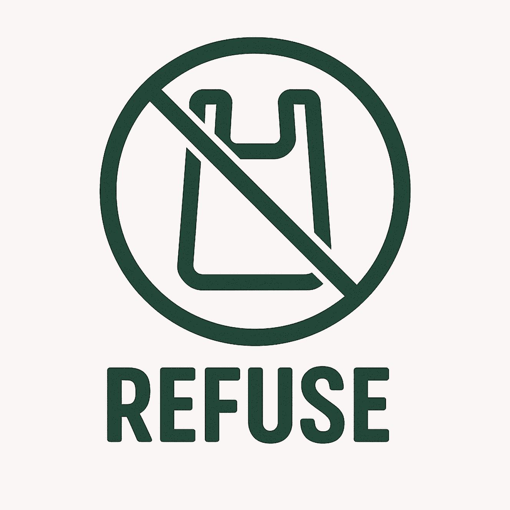

refuse
refuse, is to minimise unnecessary consumption and waste. We can do so by declining items we don't need, choosing sustainable alternatives, and being mindful of purchases.

The 5 zero waste principles guide us to work toward a more sustainable and eco-friendly future. By following these principles, individuals can reduce the amount of waste sent to landfills, conserve natural resources, and minimize the impact of waste on the planet.
refuse, is to minimise unnecessary consumption and waste. We can do so by declining items we don't need, choosing sustainable alternatives, and being mindful of purchases.
reduce, is to minimise the amount of resources and waste we generate by using less and making wise choices. We can do so by buying only what is necessary, selecting better-made products that last longer, and opting for digital alternatives when possible.
reuse , is to extend the life of products and materials by using them more than once, rather than discarding them after a single use. We can do so by repurposing everyday items, repairing instead of replacing, and choosing second-hand goods.
recycle, is to reprocess materials to be used again, reducing the need for new resources and keeping valuable materials out of landfills. We can do so by properly sorting our recyclables, understanding local recycling guidelines, and purchasing items made from recycled content.
compost, is to return organic waste to the earth by allowing it to decompose naturally into nutrient-rich soil. We can do so by composting food scraps and other biodegradable materials at home or through community programs.
Patagonia'goal is to significantly cut its emissions while simultaneously changing the company's mindset and encouraging its workers and clients to lead more sustainable lives.
Patagonia's sustainability commitment dates back to 1973 when the company was founded, even before the concept of sustainability emerged, with a vision of a business that doesn't harm the environment. Since then, they've been actively working to minimize their environmental impact.